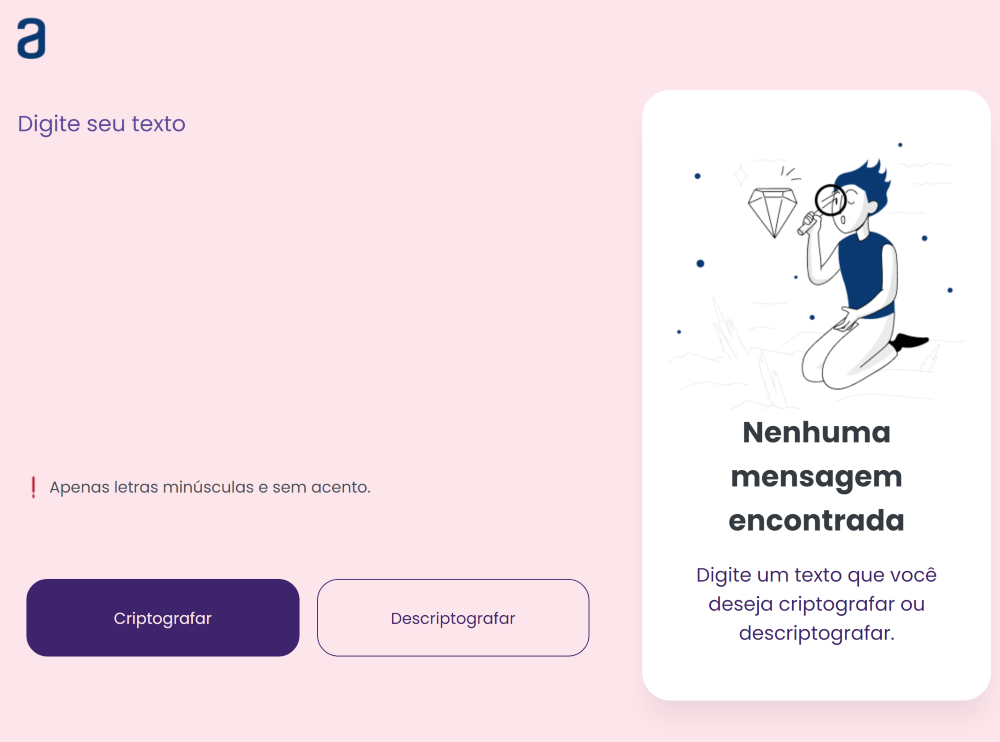
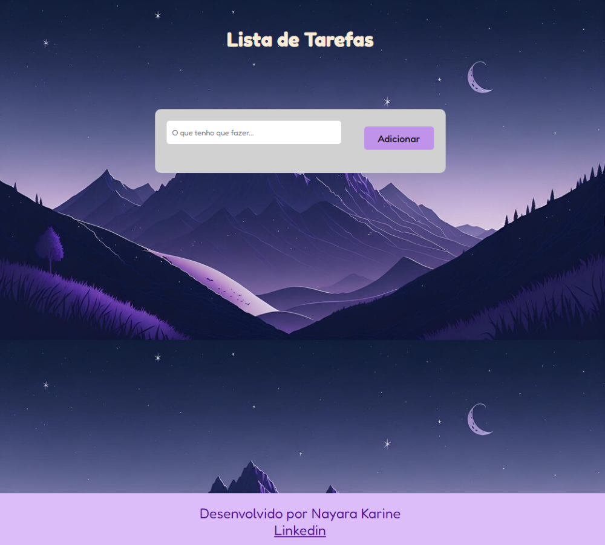
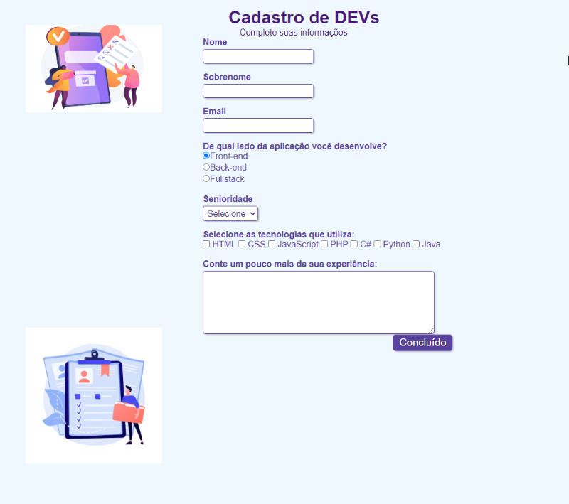
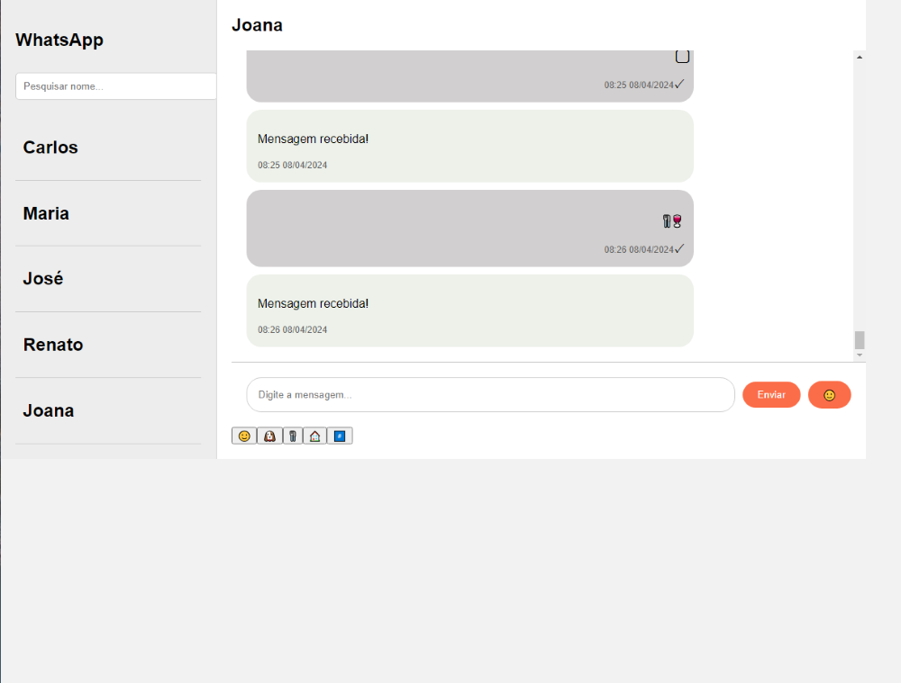
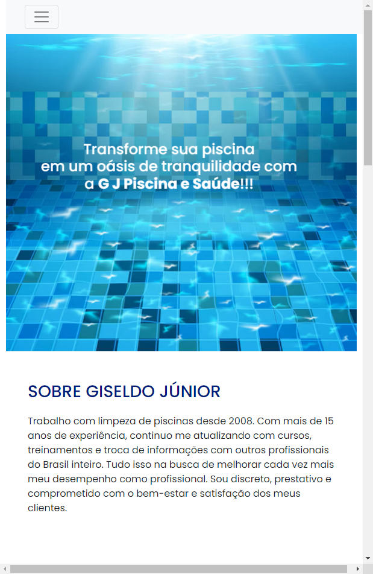

Jodo do Número Secreto
Esse projeto é um jogo simples onde você tenta adivinhar um número. Na página, você verá
instruções e um campo para inserir sua suposição. Depois de inserir sua resposta, você pode
clicar no botão "Chutar" para verificar se está correto. Se estiver errado, o jogo dará
feedback. Você pode reiniciar o jogo a qualquer momento clicando no botão "Novo jogo".
Link do
projeto
(500).png)
Decodificador de texto
Descrição:
Neste projeto, é possivel fazer a criptografa e descriptografa textos de acordo com algumas
regras específicas.
Descrição
A criptografia segue seguintes regras:
- A letra "e" é convertida para "enter"
- A letra "i" é convertida para "imes"
- A letra "a" é convertida para "ai"
- A letra "o" é convertida para "ober"
- A letra "u" é convertida para "ufat"
É possível converter uma palavra para a versão criptografada e também retornar uma palavra
criptografada para a versão original
Link do projeto

Lista de tarefas
O projeto serve como uma interface simples para gerenciar uma lista de tarefas, onde os usuários
podem adicionar, modificar e remover tarefas conforme necessário.
Link do projeto

Formulário de Devs
Esse projeto é um formulário de cadastro para desenvolvedores. Ele permite que os usuários
insiram suas informações, como nome, sobrenome, email, tecnologias que utilizam, senioridade e
experiência. Ao preencher o formulário e clicar no botão "Concluído", as informações são
enviadas para algum lugar (possivelmente um servidor) para processamento posterior. O objetivo é
coletar informações sobre os desenvolvedores para algum propósito específico, como recrutamento
ou análise de habilidades.
Link do projeto

Clone layout chat Conversas do Whatsapp
Esse projeto é uma interface simplificada de um aplicativo de mensagens semelhante ao WhatsApp.
Ele permite visualizar conversas com diferentes contatos e enviar mensagens. Na barra lateral,
você pode ver uma lista de chats com contatos específicos, e na seção principal, você pode
visualizar as mensagens de um contato selecionado e enviar novas mensagens. O objetivo é simular
um ambiente de troca de mensagens entre usuários.
Link do projeto

Landing Pag Tratador de Piscinas
Esse projeto é um site para promover os serviços de uma empresa de manutenção de piscinas.
Ele oferece informações sobre os serviços prestados, os benefícios de contratar a empresa e imagens
ilustrativas dos serviços oferecidos. Além disso, há um formulário de contato para os clientes
agendarem uma avaliação e os detalhes de contato da empresa, como telefone, e-mail e redes
sociais. O objetivo é atrair clientes interessados em serviços de manutenção de piscinas e
facilitar o contato com a empresa.
Link do projeto

Landing Page Técnico de Eletrodoméstico
O projeto "Itamar EletroHelp" é um site para uma empresa especializada em conserto e venda de eletrodomésticos. O site inclui:
Navegação: Menus para Home, Sobre, Serviços, Benefícios e Contato.
Sobre: Informações sobre a empresa, sua experiência e compromisso com a qualidade.
Serviços: Detalhes sobre a higienização e conserto de máquinas de lavar, lava e seca, e micro-ondas.
Benefícios: Lista das vantagens oferecidas aos clientes, como atendimento personalizado e profissionais experientes.
Produtos em Destaque: Informações sobre produtos disponíveis para venda.
Contato: Formulário para que os clientes entrem em contato com a empresa.
O site é projetado para ser informativo e fácil de navegar, destacando os serviços e valores da empresa.
Link do projeto
.png)
 GitHub
GitHub
 Instagram
Instagram
 Linkedin
Linkedin

.png)